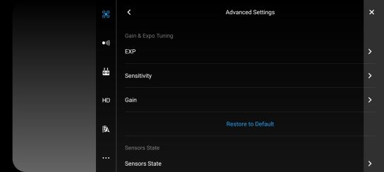

General UAS Settings
Main Control (MC) Settings

Arrow indicating settings page location
The main control settings tab allows the user to modify a number of basic settings such as

Main Control Settings

Main Control Settings Logo
- Return-to-Home Altitude
- Beginner Mode
- Maximum Altitude
- Distance Limit
with more advanced settings found at the bottom of the page.
Advanced Settings
 The Advanced Settings page allows us access to a few different aircraft sensitivity settings.
- EXP
EXP settings
Tuning the EXP settings allows you to increase/decrease stick input sensitivity. The X-axis indicates user stick input and the Y-axis represents the “value” being output to the motors from these stick inputs. The higher the value, the more sensitive the drone can be towards the input stick movement. This is not to be confused with the next setting below.
- Sensitivity
Sensitivity settings
The sensitivity setting affects how rapidly the drone will respond to the input. A higher value would cause the drone to react more aggressively while a lower value would dull out that same input.
- Gain
Gain settings
Generally, the gain settingss are left alone.
General comment for myself, try and get a drone to checkout some of these functions before you can specifically state what it is that they do. There are some contradicting pieces of information found on the “Gain” settings and I don’t want to give the wrong words of advice for something that can be sensitive to errors.
Visual Navigation Settings

Visual Navigation Settings Page

Visual Navigation Settings Logo
Here we can toggle the Obstacle avoidance on and off, as well as the Radar Chart that displays real time obstacle detection. At the bottom we can again find Advanced Settings that pertain to the systems Visual navigation.
Remote Controller Settings
add picture of settings page
- Remote Controller Calibration
- Stick Mode
- Button Customization
- Remote Controller Linking